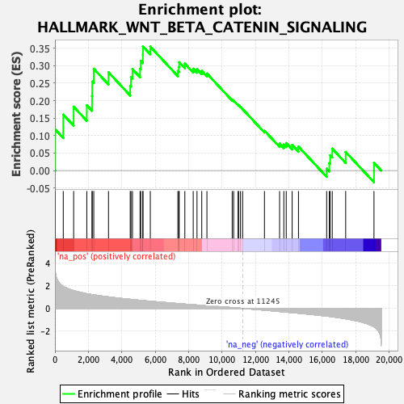
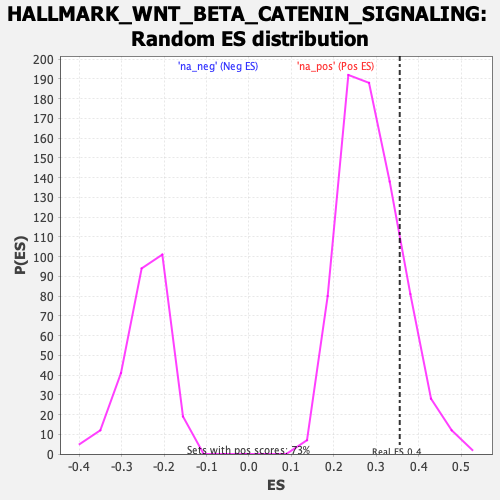

| | | Dataset | Recurrence |
| Phenotype | NoPhenotypeAvailable |
| Upregulated in class | na_pos |
| GeneSet | HALLMARK_WNT_BETA_CATENIN_SIGNALING |
| Enrichment Score (ES) | 0.3554202 |
| Normalized Enrichment Score (NES) | 1.2365303 |
| Nominal p-value | 0.16895604 |
| FDR q-value | 0.24108557 |
| FWER p-Value | 0.994 |
Table: GSEA Results Summary

Fig 1: Enrichment plot: HALLMARK_WNT_BETA_CATENIN_SIGNALING
Profile of the Running ES Score & Positions of GeneSet Members on the Rank Ordered List
| SYMBOL | RANK IN GENE LIST | RANK METRIC SCORE | RUNNING ES | CORE ENRICHMENT | | 1 | CCND2 | 14 | 3.415 | 0.1178 | Yes |
| 2 | NOTCH4 | 498 | 1.937 | 0.1603 | Yes |
| 3 | LEF1 | 1119 | 1.566 | 0.1828 | Yes |
| 4 | TP53 | 1907 | 1.287 | 0.1871 | Yes |
| 5 | WNT5B | 2220 | 1.214 | 0.2132 | Yes |
| 6 | JAG2 | 2231 | 1.212 | 0.2548 | Yes |
| 7 | AXIN2 | 2323 | 1.190 | 0.2914 | Yes |
| 8 | NOTCH1 | 3205 | 1.014 | 0.2814 | Yes |
| 9 | FZD1 | 4504 | 0.801 | 0.2425 | Yes |
| 10 | MYC | 4550 | 0.793 | 0.2677 | Yes |
| 11 | JAG1 | 4639 | 0.780 | 0.2903 | Yes |
| 12 | TCF7 | 5094 | 0.711 | 0.2917 | Yes |
| 13 | DLL1 | 5135 | 0.706 | 0.3142 | Yes |
| 14 | DVL2 | 5261 | 0.689 | 0.3317 | Yes |
| 15 | AXIN1 | 5265 | 0.689 | 0.3554 | Yes |
| 16 | HEY2 | 5706 | 0.631 | 0.3547 | No |
| 17 | GNAI1 | 7355 | 0.429 | 0.2850 | No |
| 18 | HEY1 | 7415 | 0.421 | 0.2966 | No |
| 19 | WNT6 | 7435 | 0.419 | 0.3102 | No |
| 20 | CUL1 | 7773 | 0.379 | 0.3060 | No |
| 21 | NCSTN | 8274 | 0.323 | 0.2916 | No |
| 22 | DKK4 | 8501 | 0.300 | 0.2904 | No |
| 23 | MAML1 | 8785 | 0.271 | 0.2853 | No |
| 24 | NCOR2 | 9094 | 0.237 | 0.2777 | No |
| 25 | HDAC11 | 10606 | 0.073 | 0.2027 | No |
| 26 | NUMB | 10692 | 0.064 | 0.2005 | No |
| 27 | FRAT1 | 10960 | 0.032 | 0.1879 | No |
| 28 | KAT2A | 10988 | 0.029 | 0.1875 | No |
| 29 | PSEN2 | 11103 | 0.018 | 0.1823 | No |
| 30 | ADAM17 | 11232 | 0.001 | 0.1758 | No |
| 31 | PTCH1 | 12537 | -0.151 | 0.1141 | No |
| 32 | HDAC2 | 13443 | -0.271 | 0.0771 | No |
| 33 | DKK1 | 13696 | -0.307 | 0.0748 | No |
| 34 | SKP2 | 13840 | -0.324 | 0.0787 | No |
| 35 | HDAC5 | 14195 | -0.371 | 0.0734 | No |
| 36 | FZD8 | 14573 | -0.419 | 0.0686 | No |
| 37 | CTNNB1 | 16260 | -0.674 | 0.0054 | No |
| 38 | NKD1 | 16419 | -0.702 | 0.0217 | No |
| 39 | PPARD | 16469 | -0.710 | 0.0438 | No |
| 40 | WNT1 | 16594 | -0.734 | 0.0629 | No |
| 41 | RBPJ | 17397 | -0.910 | 0.0533 | No |
| 42 | CSNK1E | 19091 | -1.608 | 0.0222 | No |
Table: GSEA details [plain text format]

Fig 2: HALLMARK_WNT_BETA_CATENIN_SIGNALING: Random ES distribution
Gene set null distribution of ES for HALLMARK_WNT_BETA_CATENIN_SIGNALING